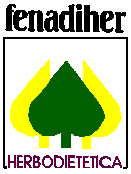

|
|
Bienvenido a BIOCESTA WEB
|
Este es el sitio en Internet de BIOCESTA, un comercio
situado en Valencia (España) dedicado a la dietetica y
fitoterapia y que tiene linea propia de productos: APIDIET®
|
|
BIOCESTA
C/ Olta 40 Bajo
46026 Valencia
(España)
Tel./FAX
(+34)963.738.739
|
|
¡Ponte en contacto!

biocesta@yahoo.es
|
Aqui
encontraras:
#Productos
que aqui se venden
#La
linea APIDIET®
#Paginas
a visitar
#Productos que aqui se venden
En BIOCESTA encontraras
remedios para cuidar la salud, siempre de forma natural: alimentos
biologicos
(distinguidos por el simbolo del CRAE {Comite Regulador de la
Agricultura Ecologica}), hierbas medicinales, complementos dieteticos (lecitina de soja, levadura de
cerveza, germen de trigo,...), cosmetica (tintes sin amoniaco, maquillaje,
champus,...), libros relacionados, productos frescos (tofu, seitan, picles, hamburguesas,...),
alimentos
de regimen, sin azucar, sin gluten.
En general, todo producto relacionado con la salud,
que se encuentra en centros de dietetica y herboristeria.
VOLVER^
#La linea APIDIET®
APIDIET® es una marca propia de
BIOCESTA, dirigida a productos apicolas (jalea real
fresca/ampollas, polen y una variedad de mieles). Todos estos
productos son de primera calidad, ademas de tener un precio
reducido. En un futuro se ira ampliando a otros sectores de
la dietetica.
VOLVER^
#Paginas a visitar
En este
apartado, que se actualiza paulatinamente, se encuentran
enlaces a paginas relacionadas con BIOCESTA y su ambito.
Aquellas paginas de empresas, son proveedoras de BIOCESTA y
por lo tanto encontraras sus productos aqui:
PRODILEVAN [www.prodilevan.com]: Distribuidora
valenciana de dietetica y productos biologicos. Como
producto principal propio tiene la orchata de chufas
sin azucar.
SOLGAR [www.solgar.com]: Empresa americana, que
produce una gama amplia en complementos de todo tipo.
Destaca por ofrecer alta calidad.
VOLVER^
BIOCESTA se
encuentra asociada dos asociaciones. Una de nivel autonomico y la
otra nacional. Ambas representan el sector del comerciante de
herboristeria/dietetica en sus niveles:
| HERDIVAL |
FENADIHER |
|
 |
| (Asociacion de Herboristeria y
Dietetica de la Comunidad Valenciana) |
(Federacion Nacional de Dietetica y
Herboristeria)
[España]. |
| * Si quieres enviar una pregunta o
cualquier pedido rellena el formulario o un e-mail a biocesta@yahoo.es * |
BIOCESTA
C/ Olta 40 Bajo
46026 Valencia (España)
Tel./FAX (+34) 963.738.739
biocesta@yahoo.es
Pagina
optimizada para 800x600 16 bits
Ultima actualizacion: 2 Jun 2004 (898 visitas)